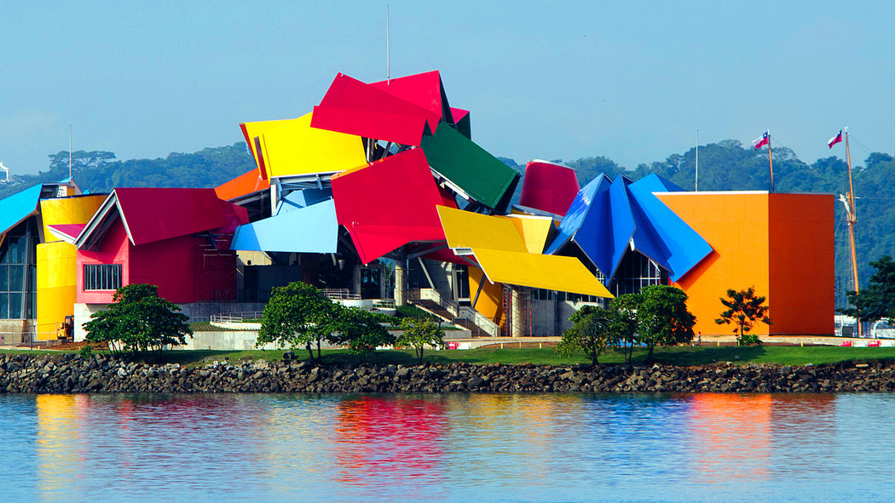

Sitios para visitar
- Océanos Divididos
- El Gran Intercambio
- Panamarama

Un recorrido por la historia natural y biodiversidad de Panamá.
El Biomuseo es una joya arquitectónica y natural ubicada en la Ciudad de Panamá, famosa a nivel mundial por ser la única obra en América Latina del célebre arquitecto Frank Gehry.
Es un destino cultural de clase mundial que destaca por su vibrante estructura multicolor y sus vistas espectaculares a la entrada del Canal de Panamá.
Tarifas de ingreso (USD)
| Tipo de visitante | Precio |
|---|---|
| Adultos | $10.00 |
| Menores (5 a 17 años) | $6.00 |
| Adultos mayores | $5.00 |
| Menores de 5 años | GRATIS |
Descubre la impresionante arquitectura y las exposiciones del Biomuseo de Panamá.